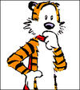

Today was my last day at eSpark Learning. During my time there I had a chance to work on some interesting projects, including developing a psychometric model to measure continuous student learning, named Hobbes. eSpark posted a full writeup of my work on Medium, but here's an excerpt below:

eSpark curriculum covers pre-K to eighth grade, in both reading and math. For the sake of simplicity, in this post we’ll look closely at our work on literacy in early grades. For example, for students to gain the prerequisites necessary for reading in first grade, they need to learn a variety of pre-reading skills such as “distinguishing long from short vowel sounds in spoken single-syllable words.” Although as adults we may take this skill for granted, it can be quite complex for young students as they have to master the ability to recognize specific vowel sounds, as well as to distinguish the characteristic of these sounds.
We wanted to develop a metric of student learning outcomes that was consistent, precise, and available in real time to guide curriculum development. We initially relied upon standardized tests, such as NWEA MAP, to inform our understanding of curriculum. However, while this data is very useful in shaping curriculum, it has two major limitations. First, standardized tests vary across districts, and thus can introduce bias if we compare nationally. Second, standardized tests typically only report data once or twice a year, which inhibits continuous improvement through data.
We evaluated numerous psychometric item-response models developed over the last few decades to measure latent variables such as learning. Unfortunately, the traditional item response models were designed to take a snapshot of a student’s ability. Our focus is on the student’s progress over the entire school year so we are not just interested in the snapshot of a student, but in their continuous change through learning. So, in the spirit of innovation, we have iterated on these latent variable models to develop our own approach to measuring learning. We named this measurement Hobbes, after a beloved tiger known for his rational approach to problems.
Hobbes is derived from the Rasch model, an item response model used since the 1960s to measure a test taker’s ability and the probability they would answer a question correctly. Northwest Evaluation Association (NWEA), a non-profit testing provider used by districts across the country, adopted this model to generate their RIT score for each student on their MAP Assessment. The model is more robust than calculating the average percentage correct because it accounts for both varying student ability and different question difficulty levels. It uses a logistic curve (see below) to translate two parameters - student ability and question difficulty - into the probability a student would answer a question correctly (between 0 and 1).
How does the Rasch Model work?
This curve is described by the function below. Given a certain question difficulty i and a certain student ability n, the function estimates the expected probability that the student would answer the question correctly:
\begin{equation} \hat{p}_{in} = P(x_{i,n}= 1) = \frac{e^{ \beta_n + \theta_i }}{1 +e^{ \beta_n + \theta_i }} \end{equation}
Notice that as as the student ability decreases relative to question difficulty, the probability function approaches 0. Conversely as student ability increases relative to question difficulty, the probability function approaches 1. Both the question and student ability parameters are normalized around the mean so a value of n=i=0 would translate to a 50% chance of answering an answer correctly.
When we feed student quiz data into the model, it can estimate the ability parameters n and difficulty parameter \(i\) by minimizing the difference between actual and predicted values \(X_{in}-\hat{p}_{in}\). These parameters provide a snapshot of how difficult the questions were and the relative ability of the students at the time the data was collected.
So how did we adapt the Rasch model to measure student growth?
The typical student working on eSpark takes both a pre- and post- quiz for each standard. If a student needs practice in reading foundational skills, we assign them to practice activities in these learning standards. Before each set of activities, the student take a prequiz with 5 questions drawn randomly from K unique questions. After their practice activities, they are then given a post-quiz with a new set of 5 questions.
These pre and post quiz questions are all developed to measure their ability master the relevant standard. If all the questions in our quiz bank had identical question difficulty level, we would be able to take the difference in average correct to measure the student growth. However, that is not the case, nor do we want that to be the case - having varying difficulty levels allow us to measure a range of ability levels.
To control for question difficulty, Hobbes finds the difference between a student’s postquiz score and the Hobbes prediction of their postquiz score. The Hobbes-predicted postquiz score is calculated given a student’s prequiz ability and the postquiz question difficulty.
\begin{equation} \mbox{hobbes growth} = \frac{1}{I} \sum_{i}^{I=5}( X_{postquiz, in} - P( X_{postquiz, in} =1 | \theta_i, \beta_n ) ) \end{equation}
By using this new metric, we create a measure that is comparable across students with different ability levels, and across questions with different difficulty levels.
We are also aware that different questions may target different skills contributing to the same learning standards. For example, the distinguishing vowel sounds learning standard can only be mastered if students can identify both short and long vowel sounds. By generating a Hobbes growth by question, we are able to aggregate across these different skills. When we reviewed the Hobbes results for this same reading standard, we noticed that students are much more adept at learning to identify long vowel sounds than short vowel sounds.
This type of information helps to inform what apps and activities we should focus on providing students and how to frame their learning experience. These insights have been invaluable in our work to improve our impact on students. Being able to accurately detect the magnitude of learning not only allows us to continuously iterate and improve on our curriculum, but it also allow us to give better feedback to students. Not only can we give student pointed feedback on what skills they have mastered and what skills they need more practice on, but it also opens up the potential to more quickly adapt learning content to their needs.